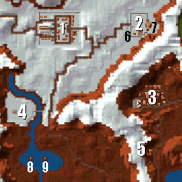

| 1 | White Cap [City Map] |
| 2 | The Castle of Eric Von Stromgaurd [City Map] |
| 3 | Castle Stone [City Map] |
| 4 | IceWind Keep [Map] |
| 5 | Shadow Guild [Map] |
| 6 | Shrine of Endurance [Shrine List] pray here in April |
| 7 | Obelisk #7 |
| 8 | Fountain [+20 accuracy and speed boost] |
| 9 | Fountain [+20 armor boost] |
Leave us a message mgrounds@hotmail.com